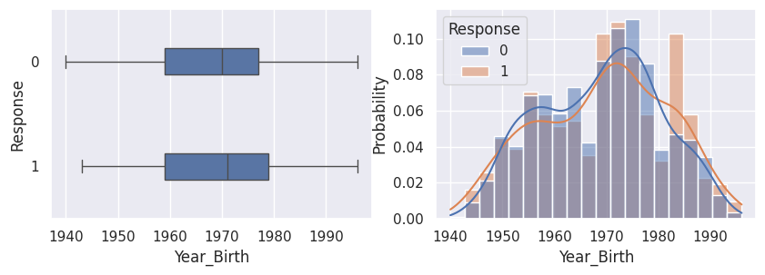
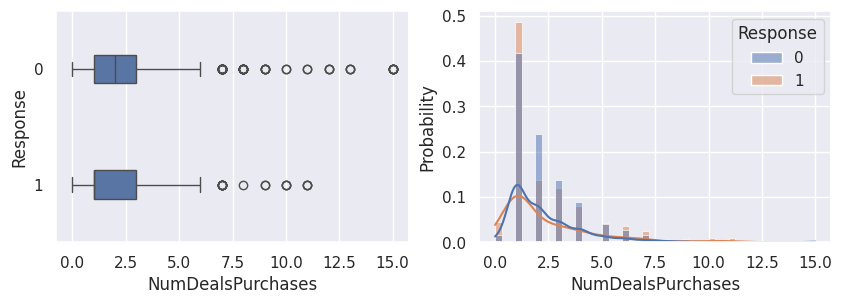
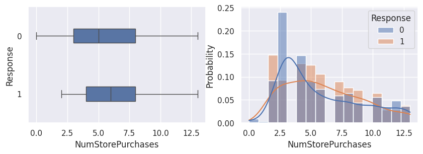
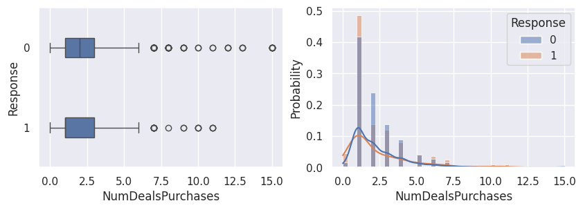
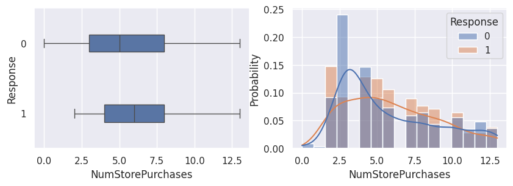
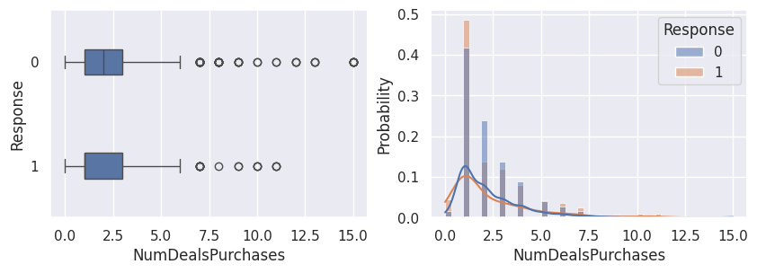
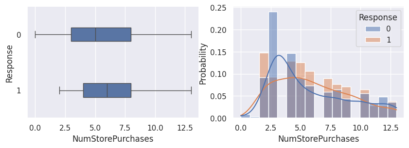
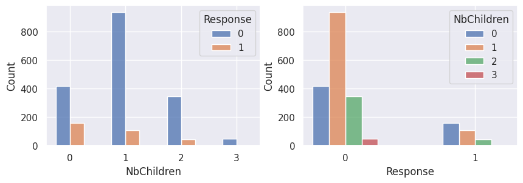

Visualisation#
Import des outils / jeu de données#
1import matplotlib.pyplot as plt
2import pandas as pd
3import seaborn as sns
4
5from src.config import data_folder
6from src.constants import var_categoriques, var_numeriques
7from src.utils import init_notebook
1init_notebook()
1df = pd.read_csv(
2 f"{data_folder}/data-cleaned-feature-engineering.csv",
3 sep=",",
4 index_col="ID",
5 parse_dates=True,
6)
1df.head()
| Year_Birth | Education | Marital_Status | Income | Kidhome | Teenhome | Dt_Customer | Recency | MntWines | MntFruits | ... | NumWebVisitsMonth | AcceptedCmp3 | AcceptedCmp4 | AcceptedCmp5 | AcceptedCmp1 | AcceptedCmp2 | Response | NbAcceptedCampaigns | HasAcceptedCampaigns | NbChildren | |
|---|---|---|---|---|---|---|---|---|---|---|---|---|---|---|---|---|---|---|---|---|---|
| ID | |||||||||||||||||||||
| 5524 | 1957 | Graduation | Single | 58138.0 | 0 | 0 | 2012-09-04 | 58 | 635 | 88 | ... | 7 | 0 | 0 | 0 | 0 | 0 | 1 | 0 | False | 0 |
| 2174 | 1954 | Graduation | Single | 46344.0 | 1 | 1 | 2014-03-08 | 38 | 11 | 1 | ... | 5 | 0 | 0 | 0 | 0 | 0 | 0 | 0 | False | 2 |
| 4141 | 1965 | Graduation | Together | 71613.0 | 0 | 0 | 2013-08-21 | 26 | 426 | 49 | ... | 4 | 0 | 0 | 0 | 0 | 0 | 0 | 0 | False | 0 |
| 6182 | 1984 | Graduation | Together | 26646.0 | 1 | 0 | 2014-02-10 | 26 | 11 | 4 | ... | 6 | 0 | 0 | 0 | 0 | 0 | 0 | 0 | False | 1 |
| 5324 | 1981 | PhD | Married | 58293.0 | 1 | 0 | 2014-01-19 | 94 | 173 | 43 | ... | 5 | 0 | 0 | 0 | 0 | 0 | 0 | 0 | False | 1 |
5 rows × 28 columns
Variables globales#
1var_categoriques_extra = ["NbAcceptedCampaigns", "HasAcceptedCampaigns", "NbChildren"]
2
3var_categoriques_fe = (
4 var_categoriques + var_categoriques_extra
5) ## todo: sauvegarder toutes ces listes dans un pd.Series et les lire
1df[var_categoriques_fe] = df[var_categoriques_fe].astype(str).astype("category")
Visualisation#
Relation avec la variable cible (Response)#
1for var in var_numeriques:
2 _, ax = plt.subplots(1, 2, figsize=(10, 3))
3 sns.boxplot(df, x=df[var], y=df["Response"], width=0.25, ax=ax[0])
4 sns.histplot(
5 df,
6 x=df[var],
7 kde=True,
8 ax=ax[1],
9 hue=df["Response"],
10 stat="probability",
11 common_norm=False,
12 )
13 plt.show()


 





1for var in var_categoriques_fe:
2 _, ax = plt.subplots(1, 2, figsize=(10, 3))
3
4 sns.histplot(
5 df,
6 x=df[var],
7 hue=df["Response"],
8 multiple="dodge",
9 shrink=0.5,
10 ax=ax[0],
11 )
12 sns.histplot(
13 df,
14 hue=df[var],
15 x=df["Response"],
16 multiple="dodge",
17 shrink=0.5,
18 ax=ax[1],
19 )
20
21 plt.show()

Graphiques supplémentaires#
1_, ax = plt.subplots(1, 2, figsize=(12, 4))
2
3ax[0].set_title("Revenu en fonction du nombre de campagnes acceptées")
4
5sns.boxplot(y=df["Income"], x=df["NbAcceptedCampaigns"], ax=ax[0])
6sns.histplot(
7 df,
8 x="Income",
9 hue="NbAcceptedCampaigns",
10 kde=True,
11 stat="probability",
12 common_norm=False,
13 ax=ax[1],
14)
<Axes: xlabel='Income', ylabel='Probability'>
1_, ax = plt.subplots(1, 2, figsize=(12, 4))
2
3ax[0].set_title("Revenu en fonction du nombre de campagnes acceptées")
4
5sns.boxplot(y=df["Income"], x=df["HasAcceptedCampaigns"], ax=ax[0])
6sns.histplot(
7 df,
8 x="Income",
9 hue="HasAcceptedCampaigns",
10 kde=True,
11 stat="probability",
12 common_norm=False,
13 ax=ax[1],
14)
<Axes: xlabel='Income', ylabel='Probability'>
todo#
1sns.histplot(
2 data=df, x="Education", hue="HasAcceptedCampaigns", multiple="dodge", shrink=0.8
3)
<Axes: xlabel='Education', ylabel='Count'>
1sns.histplot(
2 data=df,
3 x="NbChildren",
4 hue="Response",
5 multiple="dodge",
6 discrete=True,
7 shrink=0.4,
8)
<Axes: xlabel='NbChildren', ylabel='Count'>
1sns.histplot(
2 data=df,
3 x="NbChildren",
4 hue="HasAcceptedCampaigns",
5 multiple="dodge",
6 discrete=True,
7 shrink=0.4,
8)
<Axes: xlabel='NbChildren', ylabel='Count'>
Matrice de corrélation#
1plt.figure(figsize=(12, 12))
2sns.heatmap(
3 df.corr()[df.corr().abs() > 0.5],
4 annot=True,
5 cmap="BrBG",
6 linewidths=0.5,
7 vmax=1,
8 vmin=-1,
9)
/tmp/ipykernel_2065/1235220098.py:3: FutureWarning: The default value of numeric_only in DataFrame.corr is deprecated. In a future version, it will default to False. Select only valid columns or specify the value of numeric_only to silence this warning.
df.corr()[df.corr().abs() > 0.5],
<Axes: >
todo#
1## Exemple de graphique sur plusieurs colonnes
2## sns.displot(
3# data=df,
4# x="Marital_Status",
5# hue="Response",
6# col="Kidhome",
7# multiple="dodge",
8# shrink=0.8,
9## )